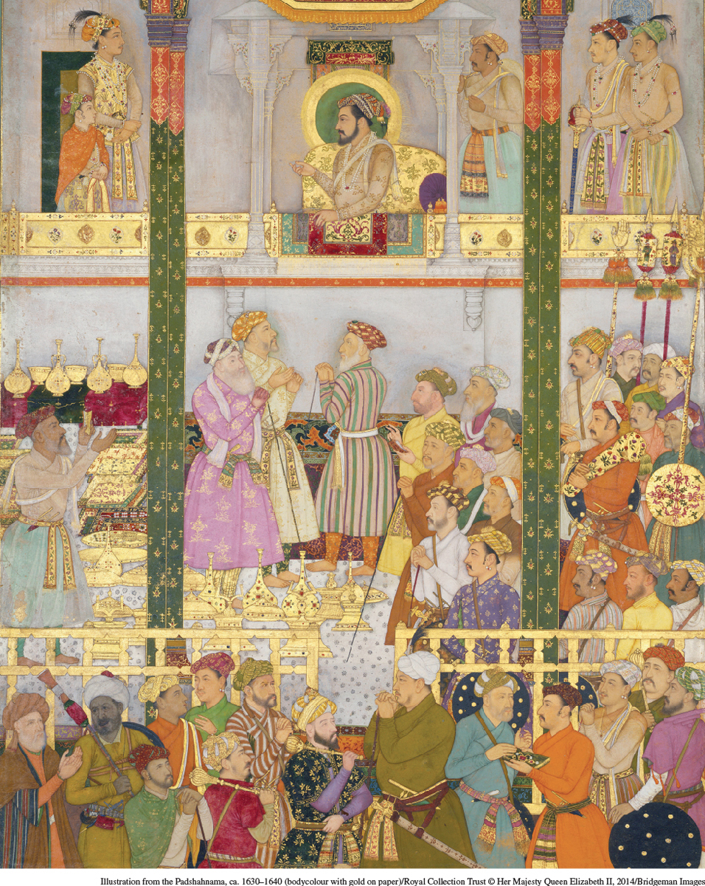

Illustration from the Padshahnama, ca. 1630–1640 (bodycolour with gold on paper)/Royal Collection Trust © Her Majesty Queen Elizabeth II, 2014/Bridgeman ImagesThe Mughal Empire Among the most magnificent of the early modern empires was that of the Mughals in India. In this painting by an unknown Mughal artist, the seventeenth-century emperor Shah Jahan is holding a durbar, or ceremonial assembly, in the audience hall of his palace. The material splendor of the setting shows the immense wealth of the court, while the halo around Shah Jahan’s head indicates the special spiritual grace or enlightenment associated with emperors.